|
Revisiones |
||
|
01/04/2015 |
Magliola, Adrian |
Creacion |
|
|
|
|
Índice de contenido
En
este documento se dará información clara y concisa de cómo
utilizar el sistema SITECO y su funcionamiento. SITECO fue creado con
el objetivo de sistematizar la asignacion de sueldos a profesores,
facilitar el proceso y controlar sus etapas. SITECO esta dividido en
dos modulo:
El
modulo de coordinadores: pemite asignar el sueldo a sus profesores,
confirmar, agregar observaciones y cargar extras.
El modulo de tesoreria: permite conocer los importes determinados por los coodinadores, conocer cursos sin confirmar, cursos cambiados, sueldos cambiados y asignar el importe a pagar por GEMINIS.
Es
de mucha importancia consultar este manual antes y/o durante la
utilización del sistema, ya que lo guiará paso a paso en el manejo
de las funciones en él. Con el fin de facilitar la comprensión del
manual, se incluyen gráficos explicativos.
El
objetivo de este manual es ayudar y guiar al usuario a utilizar
correctamente el sistema SITECO. En los objetivos particulares se
destacan:
Conocer cómo utilizar el sistema, mediante una descripción detallada e ilustrada de las opciones.
Informar requisitos mínimos para utilizar SITECO.
El presente manual está dirigido a los coordinadores de carrera de la universidad del cema y al o los resposables del area de tesoreria.
Los conocimientos mínimos que deben tener las personas que utilizaran el sistema SITECO y deberán usar este manual son:
Conocimiento basicos de sistema operativo y utilizacion de navegadores web.
SITECO: sistema de tesoreria y coordinadores.
Coordinador/Director: persona encargada de dirigir un progama en UCEMA.
Curso confirmado: curso que el director valido.
Curso: se denomina curso a la combinacion univoca de :
Una materia.
El tipo de materia (teoria o practica).
Un profesor.
Un rol (titular o ayudante).
Un horario.
Nota: Un curso puede tener al mismo profesor en ambos roles.
Para la implementación del sistema SITECO se requiere:
Computadora de escritorio/notebook con 1Ghz y 1Mb de ram en adelante.
Sistema operativo windows, linux o Mac.
Navegador web: firefox, chrome o opera/safari.
Los escenarios describen como se desarrollan los hechos en un determinado proceso.
A
grandes rasgos, el proceso anterior se podia describir con el
siguiente flujo:
El director creaba un archivo con los cursos y los profesores y se lo envia a los secretarios
Los secretarios cargan los cursos en SIGEU.
El director creaba un archivo con los sueldos a pagar y se lo envia a tesoreria.
Tesoreria utilizaba el archivo recibido de cada coordinador, ingresaba a SIGEU e ingresaba en cada curso el importe a pagar
Imagen:
Escenario actual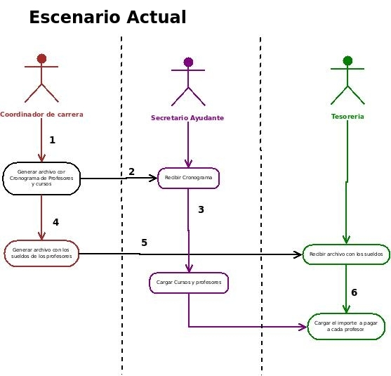
El director creara un archivo con los cursos y los profesores y se lo envia a los secretarios
Los secretarios cargan los cursos en SIGEU.
El director ingresa a SITECO, mofica los sueldos que no sean los estandar y confirma los cursos.
Tesoreria ingresa a SITECO y confirma los importes ingresados por el coordinador.
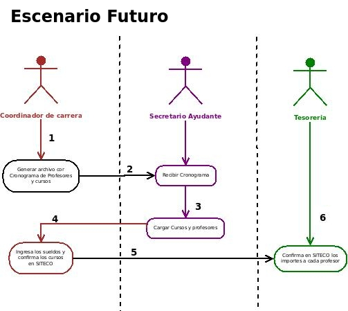
Imagen:
Escenario escenario futuro
El objetivo principal del modulo de coordinadores, es facilitar las tareas a los directores de carrera:
Conocer el estado actual de los cursos que coordina.
Asignacion de sueldos a los profesores del programa.
Agregar comentarios a los cursos.
Editar importes default.
Cargar extras.
Verificar los cursos cargados y conocer los faltantes.
Para ingresar al sistema de utilizar su usuario y contraseña de SIGEU (no es la contraseña del email).
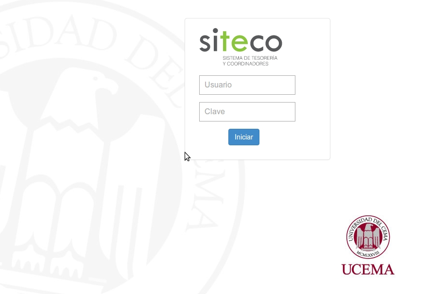
Imagen: Login / ingreso al sistema
Es la patalla principal del sistema. En ella, el coordinador podrá ver un resumen de todos los programas que dirige. Cada programa sera una fila que dice la cantidad de cursos que hay cargados en SIGEU y la cantidad que se encuentran confirmados
En la barra lateral tiene las siguientes secciones:
Programas: tiene los programas que dirige el coordinador.
Profesores: tiene informacion de los profesores.
Ayuda: permite ver online este manual de usuario.
Salir: permite salir del sistema.
Imagen:
Index/home 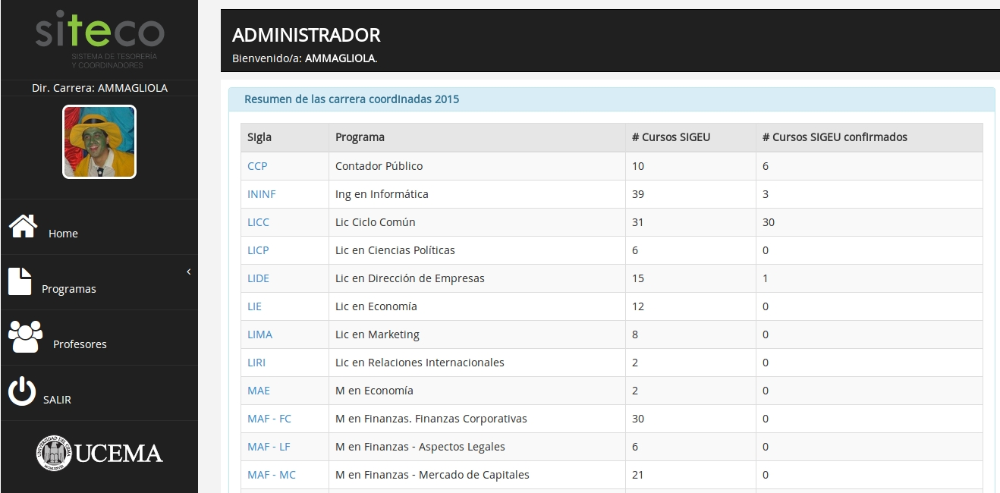
Esta seccion permite ver los cursos ingresados para un determinado programa. El director debe hacer click en la seccion programa y elegir alguno de los programas o desde el home, puede hacer click sobre el nombre del programa.
Imagen:
selección de programa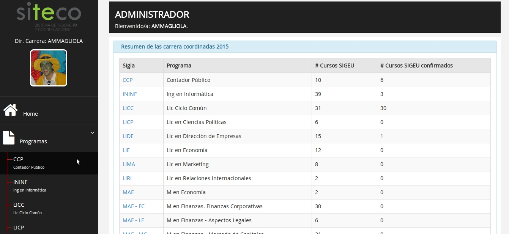
Una vez seleccionado el programa, se muestra los cursos que fueron cargados en SIGEU para el año actual y para le año siguiente.
La interfaz permite distinguir tres secciones:
Cursos en SIGEU: que son los cursos cargadas por los secretarios.
Cursos cambiados: que son aquellos cursos que fueron cargados y luego se les cambio el profesor.
Plan de estudio: tiene todas las materias obligatorias del plan de estudio del programa
I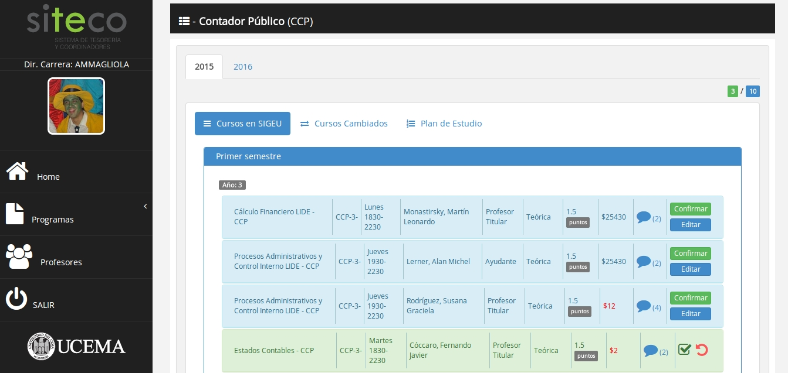
magen:
cursos del programa.
La interfaz esta compuesta por:
Son aquellos cursos que aun no se encuentran confirmados
Son aquellos cursos que ya fueron confirmados.
Permite confirmar el curso.
Permite editar el importe e ingresar una observacion:
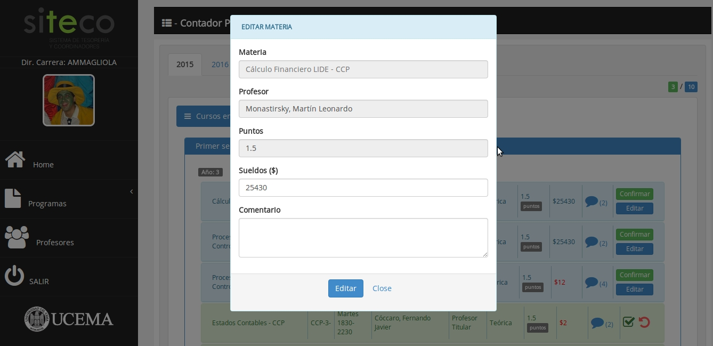
Imagen:
editar importe del curso/agregar comentario
Permite ver los comentarios de un curso:
[A]: comentarios automaticos.
[M]: comentarios manuales.
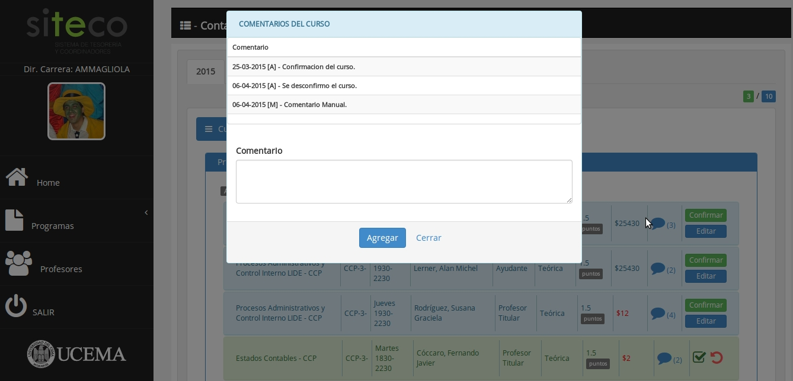
Imagen:
ingresar comentario
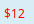
Aquellos cursos que se les modifico el importe.
Permite desconfirmar el curso.
Aqui puede encontrara aquellos cursos a los cuales se les haya cambiado el profesor.
No contemplara los cambios de horario.
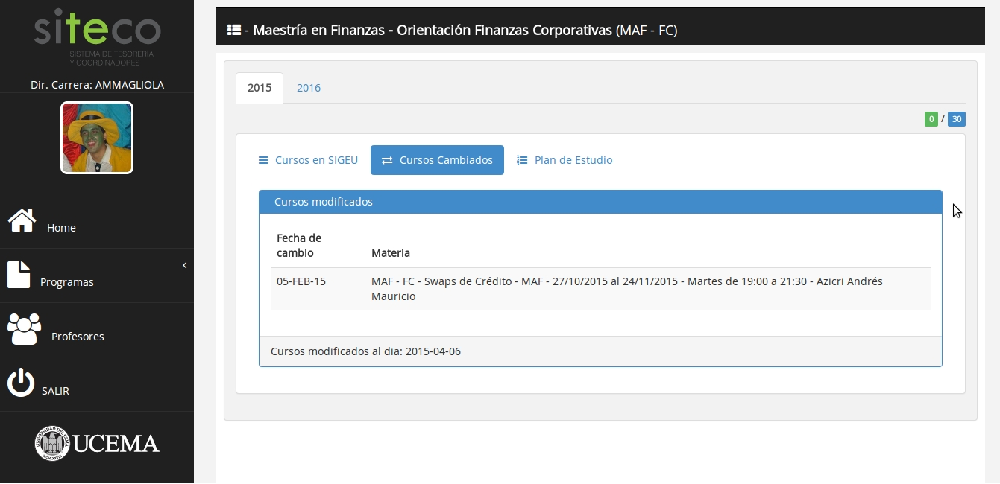
Imagen:
ingresar cursos modificados
Aqui se encuentran las materias OBLIGATORIAS del programa y se identifican aquellas que tienen una comision asignada (en verde) y aquellas que no (en rojo).
Si una materia se encuentra en mas de un programa, se contara como asignada si la comision es la del programa y no si es de otro programa.
El sistema permite a los directores de carrera conocer los cursos que dan los profesores de la universidad.
Para
ello debe buscar por APELLIDO al profesor , el sistema no hace
diferencia entre mayusculas, minusculas o acentos.
El profesor
debe
ser selccionado de la lista y no llenado a mano.
La seccion de profesores permite ver los cursos o las extras, el tipo de contratacion , el legajo y la dedicacion.
Aqui
se puede ver las materias que tiene asignado el profesor
seleccionado, los comentarois, los roles y toda la informacion
asociada al curso.
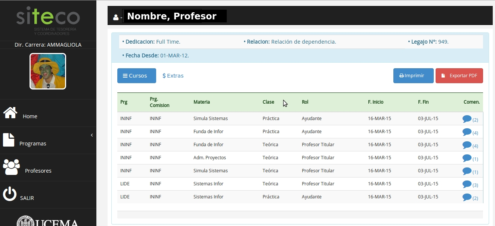
Imagen:
ingresar cursos profesor
Tambien se puede exportar la informacion de los cursos a un PDF.
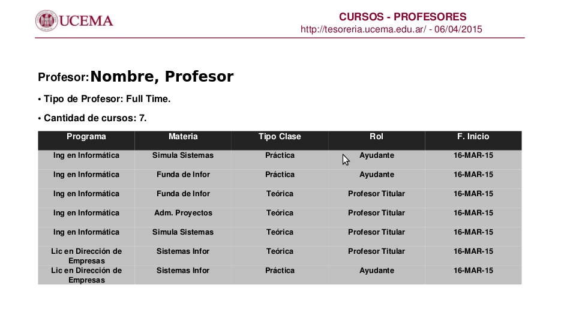
Imagen:
exportar cursos
El sistema permite a los directores de carrera cargar extras a los profesores. Los directores de carreras veran solamente las extras cargadas por el en sus programas y no las extras cargadas por otros directores o tesoreria.
Asi mismo, solo se permite algunos pocos conceptos para cargar las extras.
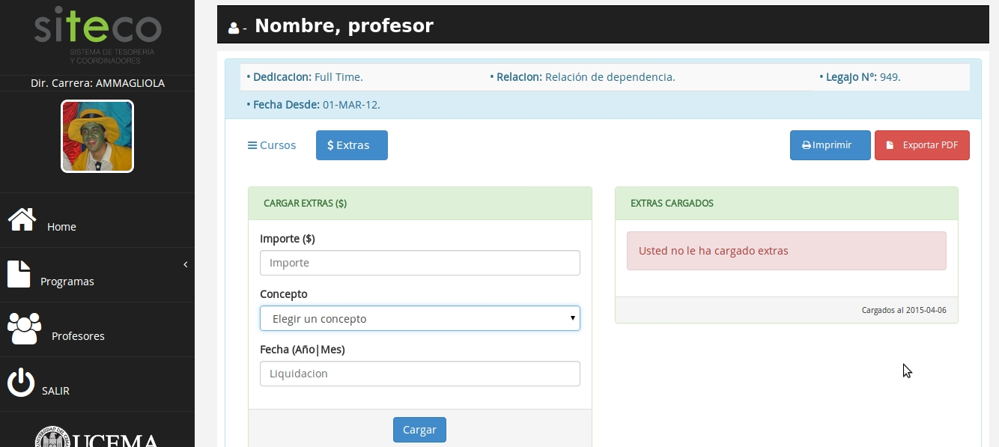
Imagen:
cargar extras